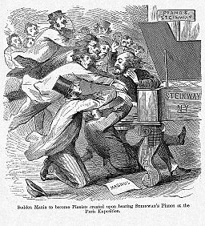
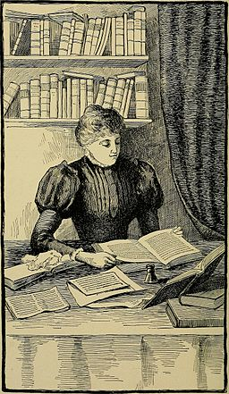

< the beginning >
Like most children, I had a lot of ideas about my future profession.
While some most of my interests have changed since then, I still believe that my ideal career incorporates 3 things: creativity, problem solving, and helping others. I've tried out several paths so far, and have picked up some skills that I'm proud of along the way. My next step is pursuing a career in programming.
< /the beginning >
< before >
Piano Teacher

By Amedee de Noe [Public domain],
via Wikimedia Commons
ESL Teacher

By Internet Archive Book Images [No restrictions],
via Wikimedia Commons
I really enjoyed these jobs! They allowed me to work with both children and adults, to travel to Eastern Europe and North Africa, and taught me some valuable communication and cross-cultural skills. One of the major lessons I took from these jobs was that I find great joy in helping people improve their lives, even in small ways.
< /before >
< the transition point >
Quality Trainer/Curriculum Design
FOTO:FORTEPAN / Koelcsey Ferenc Dunakeszi Varosi Koenyvtar / Petanovics fenykepek [CC BY-SA 3.0],
via Wikimedia Commons
This job seemed like a great fit for me: I was able to continue the work of training, and was given the opportunity to design a curriculum from scratch. It was slightly different from my previous experience in that most of the training centered around how to use various pieces of software. I quickly realized that a lot of the workflow problems I saw were caused by quirks or gaps in the programs we were using. These were problems that no amount of training could fix, and that really bothered me.
At this point, I also became interested in coding as a career. I spent a lot of my free time learning via Codecademy and freeCodeCamp, but found it difficult to progress quickly while working full-time and commuting 3 hours a day. So, I made a big decision: I saved some money and quit my job to pursue coding full time.
< /the transition point >
< today >
Code Student

By User Gflores on en.wikipedia [Public domain],
via Wikimedia Commons
That pretty much brings us to today. I'm currently studying web development through LaunchCode's LC101 course. We've also covered a bit of python and will be tackling the back-end later this summer. In my free time, I'm continuing to work on front-end projects and test my Javascript knowledge through freeCodeCamp, and I'm acting as a team lead for an international bunch of developers and devs-in-training through a group called Chingu Cohorts. You can see some of the projects members have built over the past few months here.
In summary: It's taken me a while to get to this point, but I'm more certain than ever that a career in programming is in my future; I'm committed to doing everything I can to reach that goal.
< /today >

{kind=link}
_(14782692802).jpg){kind=link}
{kind=link}